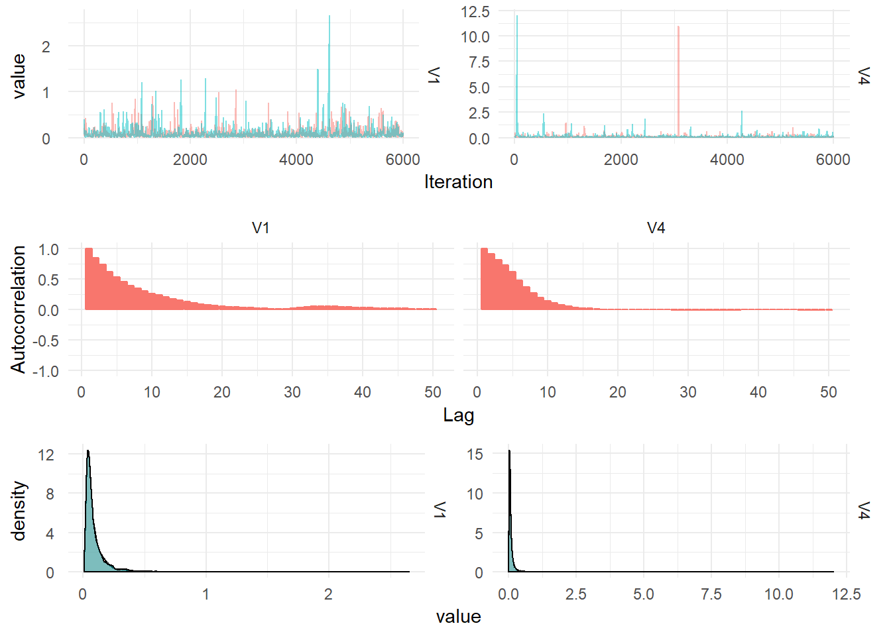

Investment Data
Proposed Model
The proposed model is the second order DLM representing a linear growth.
\[\begin{align} Y_t &= F \textbf{x}_t + \textbf{v}_t, \quad v_t \sim \mathcal{N}(0, V), \\ \textbf{X}_t &= G \textbf{x}_{t-1} + w_t, \quad w_t \sim \textrm{MVN}(0, W), \\ \textbf{X}_0 &\sim \textrm{MVN}(m_0, C_0). \end{align}\]
The state is two dimensional, as such the system noise matrix \(W\) is a \(2 \times 2\) matrix. The observation and system evolution matrices do not depend on time, the observation matrix is \(F = (1 \quad 0)\) and the system evolution matrix is:
\[G = \begin{pmatrix} 1 & 1 \\ 0 & 1 \end{pmatrix}.\]
Gibbs Sampling
First we consider the joint distribution of the random variables in the model:
\[p(\textbf{x}_{0:T}, y_{1:T}, V, W) = p(V)p(W)\prod_{t=1}^T p(y_t|\textbf{x}_t, V)p(\textbf{x}_t|\textbf{x}_{t-1}, W).\]
The joint distribution simplifies nicely because of the conditional independent of the observations given the latent-state and the Markov property of the latent-state. In order to construct a gibbs sampler for the process, we can sample the latent-state using forward filtering backward sampling and use Inverse Gamma distributions for the prior distributions of \(V\) and \(W\). This reduces to a conditional conjugate update for \(W\) of the form:
\[p(W|\textbf{x}_{0:T}, y_{1:T}, V) = \textrm{Inv-Gamma}\left(\alpha + \frac{T}{2}, \beta + \frac{1}{2}\sum_{t=1}^T (\textbf{x}_t - G_t\textbf{x}_{t-1})\right)\]
And for the observation matrix, \(V\):
\[p(V|\textbf{x}_{0:T}, y_{1:T}, W) = \textrm{Inv-Gamma}\left(\alpha + \frac{T}{2}, \beta + \frac{1}{2}\sum_{t=1}^T (y_t - F_t\textbf{x}_{t})\right)\]
It is useful to specify prior belief about the parameters in terms of the mean and variance. If \(X \sim \textrm{Inv-Gamma}(\alpha, \beta)\) then:
\[\begin{aligned} \mathbb{E}(X) &= \frac{\beta}{\alpha - 1}, \\ \textrm{Var}(X) &= \frac{\beta^2}{(\alpha-1)^2(\alpha-2)}. \end{aligned}\]
Then let \(\mathbb{E}(X) = a\) and \(\textrm{Var}(X) = b\) and the solve for \(\alpha\) and \(\beta\):
\[\begin{aligned} \alpha &= \frac{2b + a^2}{b}, \\ \beta &= \frac{a(a^2+b)}{b}. \end{aligned}\]
The prior mean for the observation variance is \(a_y = 1\) with variance \(b_y = 1000\) and the prior mean for the system variance is \(a_x = 0.1\) and variance \(b_x = 1000\) leading to prior distributions of:
\[\begin{aligned} p(V) &= \textrm{Inv-Gamma}(2.001, 1.001) \\ p(W) &= \textrm{Inv-Gamma}(2.00001, 0.100001) \end{aligned}\]
The following figure shows the density of these prior distributions:

The posterior densities summarised from 12,000 MCMC draws are plotted below:
